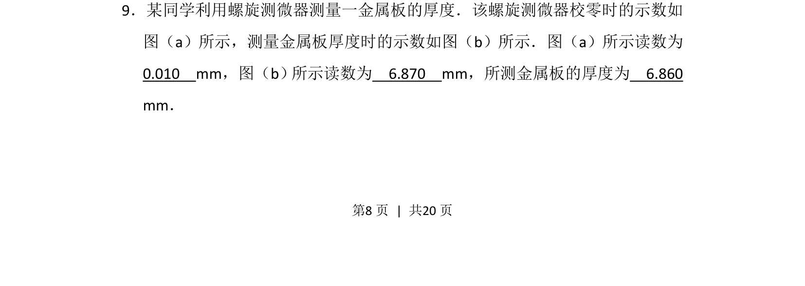
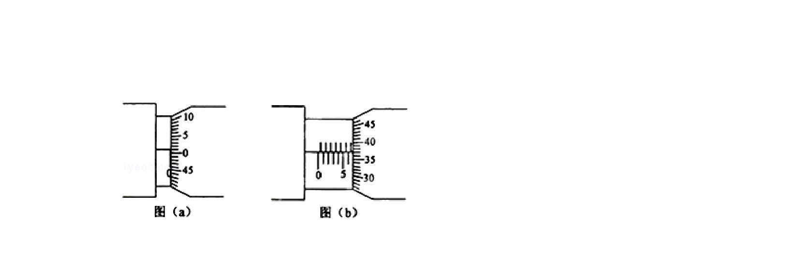
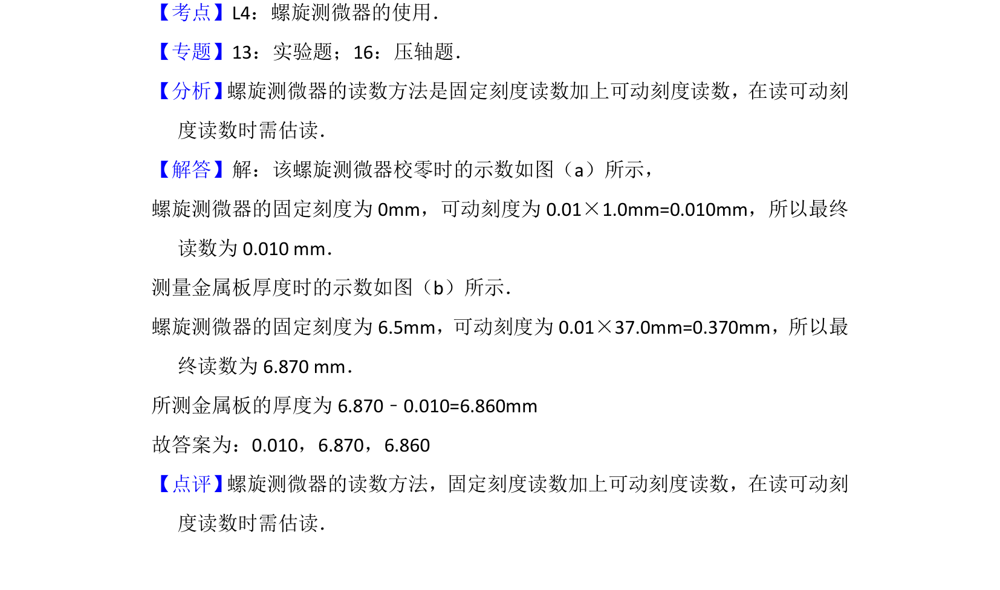

考点：螺旋测微器读数 有效数字 减法运算


该题考查螺旋测微器读数方法及金属板厚度的计算。

📄 原 PDF 第 8 页：
素材/真题/吉林/2008-2024·（吉林）物理高考真题/2012年高考物理试卷（新课标）（解析卷）.pdf
9．某同学利用螺旋测微器测量一金属板的厚度．该螺旋测微器校零时的示数如 图（a）所示，测量金属板厚度时的示数如图（b）所示．图（a）所示读数为 0.010 mm，图（b） 所示读数为 6.870 mm，所测金属板的厚度为 6.860 mm．